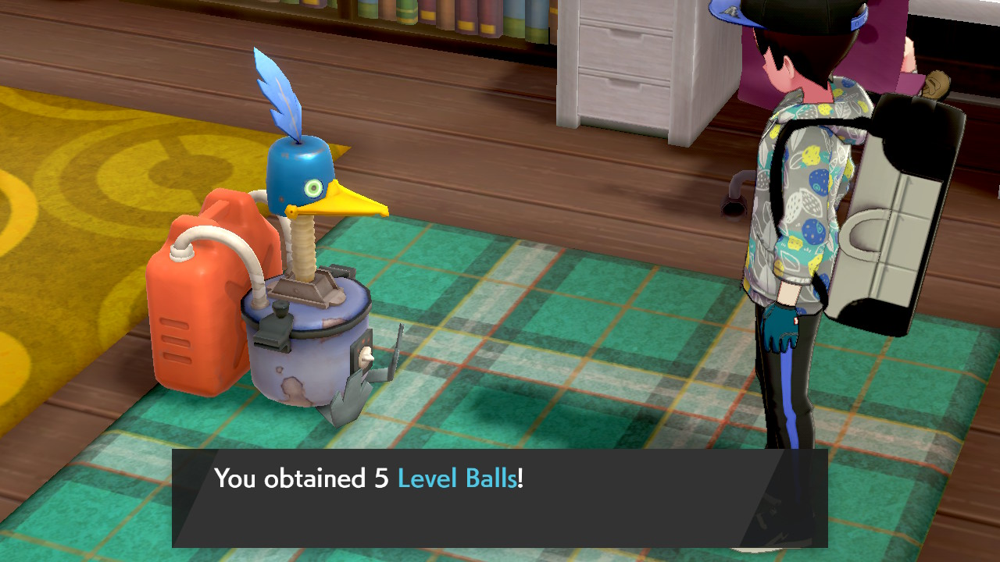

This portion of the guide will cover the process of RNG abusing the Cram-o-matic and the PC lottery function in Sword/Shield using the SWSH Overworld RNG Generator by LegoFigure11.
Item RNG abuse is best utilized to help players obtain rare/valuable items such as rare Pokeballs!
This guide assumes you are using a CFW Switch console running Atmosphere. If you are not running CFW fear not, you can find an alternative CFWless guide here!
Download and extract all the contents from the SWSH_OWRNG_Generator_GUI.zip into an empty folder.
Download and extract all the contents from the sys-usb-botbase and ldn-mitm downloads into an empty folder.
Place the atmosphere folder(s) from these downloads onto the root of your Switch SD card and reboot the console.
You can check the atmosphere/contents folder of your SD card and make sure the 430000000000000B & 4200000000000010 folders are present before rebooting your console if you wish.
In-game setup:
Have the Rotom PC lottery function & Cram-o-matic available for use.
If you plan to RNG abuse the Cram-o-matic, have at least 4 different apricorns to use in the machine.
Stand next to the machine you want to work on.
Press the Home button on your controller, click Connect on the main window of the tool.
Advancing the RNG state:
Multiple in-game actions can be used to advance the RNG state with varying influence, the most useful methods for item RNG abuse include:
Player movement - Each time the player moves then stops by use of the control stick the RNG state will advance a small amount.
Active NPCs - Standing near an NPC will "activate" them, this will advance the RNG state quite rapidly.
Day skipping - We can use the day skip feature of the tool to advance the RNG state rapidly and will be our go-to mathod for large amounts of frame advancements.
Closing the pause menu has an added effect of freezing noise in the area for a short time period, we will use this window of silence to our advantage to near guarantee that we interact on the correct frame. (More on this below!)
Cram-o-matic RNG abuse (CFW)
Time to get to work!
The goal is to interact with the Cram-o-matic on the calculated target frame given to us by the Cram-o-matic tab of the generator. We will be using the advancement methods listed at the top of the page. dayskip, menuing and player movement advances will be used for this example.
If you plan to use the DaySkip feature you should take note of how many frames advance per day skipped to ensure that you don't overshoot your target.
In this example we will be aiming for a 5 Level Balls. You can be more specific with the filters if you wish, such as filtering for a specific rare items.
Figure 1 - Tool setup
Awesome, everything looks good! We can see our current seeds on the Cram-o-matic tab and have our filters set properly. Time to stand near the Cram-o-matic!
Figure 2 - Game setup
Once the Cram-o-matic tab is filled in correctly you can begin looking for target frames by clicking the search button.
If your results are not desirable, repeat the following:
Disconnect your Switch from the tool.
Restart your game and enter the overworld.
Enter the pause or Home menu and reconnect your Switch to the tool.
Search again, do this until you have desirable results.
Calculating the amount of advancements that pass from closing the pause menu is required for this method! Do this roughly 5 times and write down the number of advancements that passed, keep the highest number in mind. (In this example, 35 was the highest number of advancements.)
We found a target frame! 5 Level Balls on advance 795. This is the frame we will press A to initiate the Cram-o-matic. The RNG state will not advance during the menus, you can safely press B if you miss and then begin looking for a new target.
Figure 3 - Target found!
We'll want to exit the pause menu as close to the target frame as possible in order to freeze the noise in the area, then use rapid player movement advances to hit our target frame and finally, interact with the cram-o-matic on this frame.
Here's a more fleshed out example...
The target is 795 advances away, delay is 0.
Advance towards the target frame by standing close to a nearby NPC to slowly get closer. (Or use DaySkip to advance large distances quickly!)
Once close enough (Within 500 frames of the target), run over to the Cram-o-matic.
From this point, only advance by opening and closing the menu and using small player movements.
Earlier we calculated 35 advances from closing the menu slowly advance the RNG state using player movement until roughly 35 frames away to avoid overshooting. (Adapt this number to suit the number you noted down earlier.)
Pause the game by pressing X, unpause while watching the number in the Curr. Adv field of the generator.
If you undershoot the target nudge control stick quickly, once you see your target frame in the Curr. Adv field, interact with the Cram-o-matic by pressing A.
Player movement will advance the RNG state 1-2 frames with each new stick input, allowing for more precise advancements during the window of silence, making it much easier to hit a target frame.
If you believe you interacted with the Cram-o-matic on the correct frame, feed it 4 apricorns and take your reward! Make sure the reward matches the output of the generator.
Figure 4/5 - Result Found!

The result matches the output of the generator, mission accomplished! We got 5 Level Balls from the Scam-o... er... Cram-o-matic on our first attempt!
That's all there is to RNG abusing the Cram-o-matic!
Rotom Lottery RNG abuse (CFW)
Time to get to work!
The goal is to interact with the PC in any Pokecenter on the calculated target frame given to us by the Loto-ID tab of the generator. We will be using the advancement methods listed at the top of the page. dayskip, menuing and player movement advances will be used for this example.
If you plan to use the DaySkip feature you should take note of how many frames advance per day skipped to ensure that you don't overshoot your target.
We will be aiming for a Master Ball, this requires the 5 digit number given by the Loto-ID minigame to exactly match the Trainer ID one of your caught/stored Pokemon. We can determine which frame will match our TID using the Loto-ID tab of the generator.
You can search for multiple TIDs by opening Loto-ID.txt in a text editor and inputting a list of TIDs to read from, this file is found in the same directory as the generator.
Figure 1 - Tool setup
Awesome, everything looks good! We can see our current seeds on the Roto-ID tab and have our filters set properly. Time to stand near the PC in Wedgehurst Pokecenter!
Figure 2 - Game setup
Once the Loto-ID tab is filled in correctly you can begin looking for target frames by clicking the search button.
If your results are not desirable, repeat the following:
Disconnect your Switch from the tool.
Restart your game and enter the overworld.
Enter the pause or Home menu and reconnect your Switch to the tool.
Search again, do this until you have desirable results.
Calculating the amount of advancements that pass from closing the pause menu is required for this method! Do this roughly 5 times and write down the number of advancements that passed, keep the highest number in mind. (In this example, 12 was the highest number of advancements.)
We found a target frame! A Master Ball match on advance x. This is the frame we will press A to fire up the PC. The RNG state will not advance during the menus, you can safely press B if you miss and then begin looking for a new target.
Figure 3 - Target found!
We'll want to exit the pause menu as close to the target frame as possible in order to freeze the noise in the area, then use rapid player movement advances to hit our target frame and finally, interact with the cram-o-matic on this frame.
Here's a more fleshed out example...
The target is x advances away, delay is 0.
Advance towards the target frame by standing close to a nearby NPC to slowly get closer. (Or use DaySkip to advance large distances quickly!)
Once close enough (Within 500 frames of the target), run over to the PC.
From this point, only advance by opening and closing the menu and using small player movements.
Earlier we calculated 12 advances from closing the menu slowly advance the RNG state using player movement until roughly 12 frames away to avoid overshooting. (Adapt this number to suit the number you noted down earlier.)
Pause the game by pressing X, unpause while watching the number in the Curr. Adv field of the generator.
If you undershoot the target nudge control stick quickly, once you see your target frame in the Curr. Adv field, interact with the PC by pressing A.
Player movement will advance the RNG state 1-2 frames with each new stick input, allowing for more precise advancements during the window of silence, making it much easier to hit a target frame.
If you believe you interacted with the PC on the correct frame, click the Try Loto-ID option in-game and spam through the menus to claim your reward! Make sure the reward matches the output of the generator.
Figure 4/5 - Result Found!
The result matches the output of the generator, mission accomplished!
That's all there is to RNG abusing the the PC lottery function!